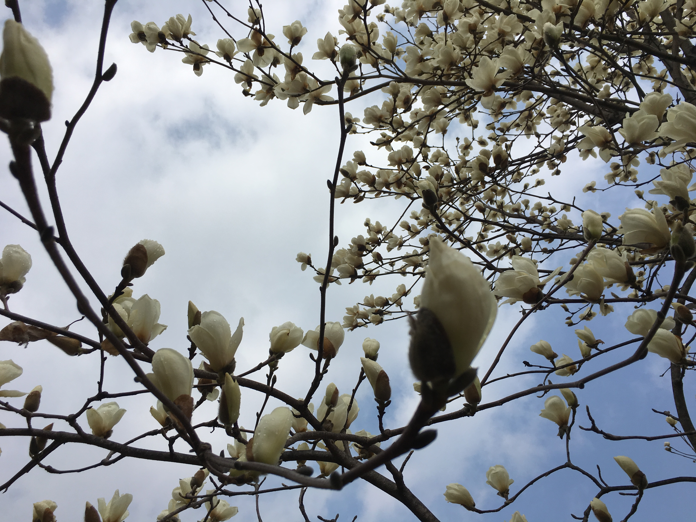

This is my forst home page inhoon. 2019,4,14. start runing !!!

백목련(白木蓮, Magnolia denudata)은 목련과에 딸린 큰키나무이다. 중국에 중부, 동부에 자생한다.[1] 기원후 600년 이후로 중국 사찰의 마당에서 경작되어왔다. 당나라에서는 깨끗함의 상징으로 간주되어 황제가 거하는 궁전의 토지에 심었다. 종종 백란으로 불리기도 하며, 상하이의 공식 도시꽃이기도 하다.